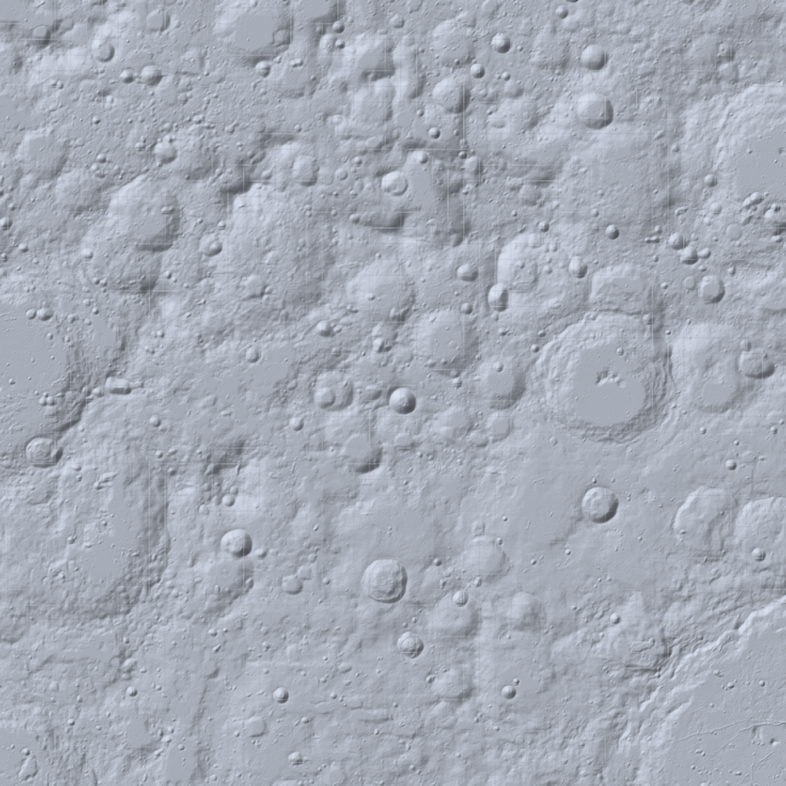

Direct sunlight
Light & a line home
Explore your landing window.
Sun and Earth, relative to your horizon.
Full disk above terrain
Within this window
Estimated array yield
● Sun● Earth▰ Terrain skylineReal terrain
Sun—
Earth—
Azimuth clockwise from north. Elevation above the local horizontal. Gold and blue markers are symbols, not disk size.
Move through your mission.
UTC━ Sun━ Earth··· Terrain horizons
—
Check a site to see sunrise, sunset and Earth visibility estimates.
Bars below the chart show direct sunlight (gold) and full Earth-disk clearance (blue). Events are interpolated between samples.
A few possibilities. Side by side.
Check a site, then add it to comparison. Change the date or landing spot and add another. Keep up to twelve scenarios. Sorted by default screening gates, then safety score; unassessed data appear last.
Regional screening, not landing certification. Default limits: slope P95 ≤10°, roughness ≤20 m, steep area ≤20%, sunlight/Earth windows ≥20%, Sun and full Earth clear at arrival. Edit limits / rank all sites / survey the south pole ↗
| Rank / score | Site / UTC start | Gate status | Slope P95 | Elevation | Roughness | Steep area | Sunlit | Earth clear | Both | Max dark | Energy |
|---|
A closer look at the south pole.
80 m source grid
90°S · South pole
Click to set a custom coordinate, then check the site. Covers roughly 80–90°S. The map uses static relief shading, not sunlight for the mission date.
Behind the horizon.
Check a site for calculation settings and source resolution.
Sunlight windows · UTC
Earth-clear windows · UTC
How to read these results
Screening and education prototype. Earth clearance is not a confirmed communications link. Solar energy uses an idealized array model. Polar presets are illustrative regional coordinates. Terrain and time sampling limit accuracy; this is not flight-qualified mission analysis.
The background scene is visual context; it does not track the mission date.